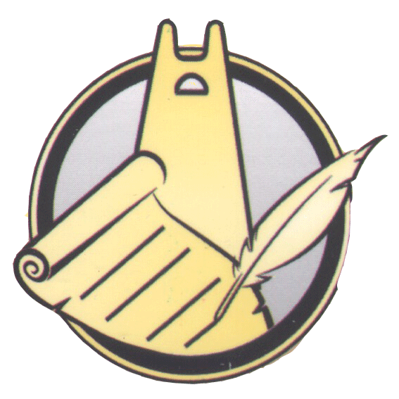

أرشيف القصاصات الصحفية والإعلامية
جمعية الشيخ أبي إسحاق إبراهيم أطفيش لخدمة التراث - غرداية
القصاصات الصادرة اليوم حصراً
0 قصاصةجميع القصاصات الأرشيفية
0 قصاصة
إجمالي القصاصات
0
أحداث خطيرة
0
قصاصات عالية الأهمية
0
عدد المصادر